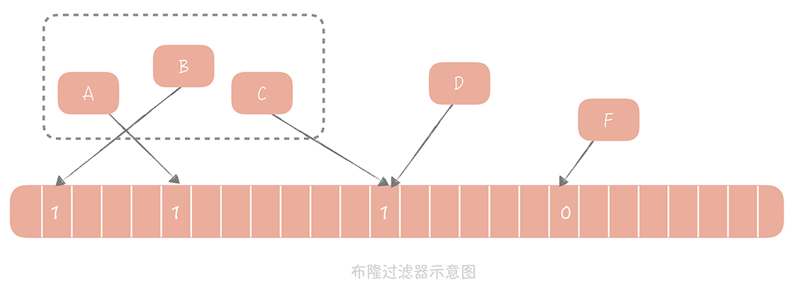
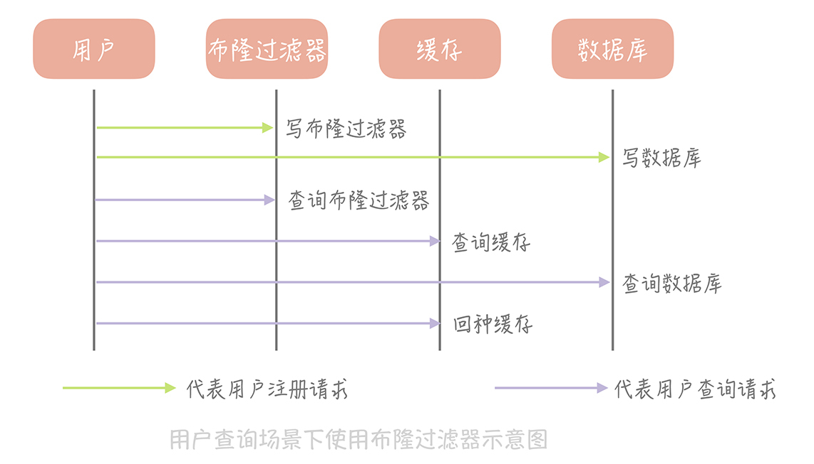

- 00 开篇词 为什么你要学习高并发系统设计？.md.html
- 01 高并发系统：它的通用设计方法是什么？.md.html
- 02 架构分层：我们为什么一定要这么做？.md.html
- 03 系统设计目标（一）：如何提升系统性能？.md.html
- 04 系统设计目标（二）：系统怎样做到高可用？.md.html
- 05 系统设计目标（三）：如何让系统易于扩展？.md.html
- 06 面试现场第一期：当问到组件实现原理时，面试官是在刁难你吗？.md.html
- 07 池化技术：如何减少频繁创建数据库连接的性能损耗？.md.html
- 08 数据库优化方案（一）：查询请求增加时，如何做主从分离？.md.html
- 09 数据库优化方案（二）：写入数据量增加时，如何实现分库分表？.md.html
- 10 发号器：如何保证分库分表后ID的全局唯一性？.md.html
- 11 NoSQL：在高并发场景下，数据库和NoSQL如何做到互补？.md.html
- 12 缓存：数据库成为瓶颈后，动态数据的查询要如何加速？.md.html
- 13 缓存的使用姿势（一）：如何选择缓存的读写策略？.md.html
- 14 缓存的使用姿势（二）：缓存如何做到高可用？.md.html
- 15 缓存的使用姿势（三）：缓存穿透了怎么办？.md.html
- 16 CDN：静态资源如何加速？.md.html
- 17 消息队列：秒杀时如何处理每秒上万次的下单请求？.md.html
- 18 消息投递：如何保证消息仅仅被消费一次？.md.html
- 19 消息队列：如何降低消息队列系统中消息的延迟？.md.html
- 20 面试现场第二期：当问到项目经历时，面试官究竟想要了解什么？.md.html
- 21 系统架构：每秒1万次请求的系统要做服务化拆分吗？.md.html
- 22 微服务架构：微服务化后，系统架构要如何改造？.md.html
- 23 RPC框架：10万QPS下如何实现毫秒级的服务调用？.md.html
- 24 注册中心：分布式系统如何寻址？.md.html
- 25 分布式Trace：横跨几十个分布式组件的慢请求要如何排查？.md.html
- 26 负载均衡：怎样提升系统的横向扩展能力？.md.html
- 27 API网关：系统的门面要如何做呢？.md.html
- 28 多机房部署：跨地域的分布式系统如何做？.md.html
- 29 Service Mesh：如何屏蔽服务化系统的服务治理细节？.md.html
- 30 给系统加上眼睛：服务端监控要怎么做？.md.html
- 31 应用性能管理：用户的使用体验应该如何监控？.md.html
- 32 压力测试：怎样设计全链路压力测试平台？.md.html
- 33 配置管理：成千上万的配置项要如何管理？.md.html
- 34 降级熔断：如何屏蔽非核心系统故障的影响？.md.html
- 35 流量控制：高并发系统中我们如何操纵流量？.md.html
- 36 面试现场第三期：你要如何准备一场技术面试呢？.md.html
- 37 计数系统设计（一）：面对海量数据的计数器要如何做？.md.html
- 38 计数系统设计（二）：50万QPS下如何设计未读数系统？.md.html
- 39 信息流设计（一）：通用信息流系统的推模式要如何做？.md.html
- 40 信息流设计（二）：通用信息流系统的拉模式要如何做？.md.html
- 加餐 数据的迁移应该如何做？.md.html
- 期中测试 10道高并发系统设计题目自测.md.html
- 用户故事 从“心”出发，我还有无数个可能.md.html
- 结束语 学不可以已.md.html
- 捐赠
15 缓存的使用姿势（三）：缓存穿透了怎么办？
你好，我是唐扬。
我用三节课的时间，带你深入了解了缓存，你应该知道，对于缓存来说，命中率是它的生命线。
在低缓存命中率的系统中，大量查询商品信息的请求会穿透缓存到数据库，因为数据库对于并发的承受能力是比较脆弱的。一旦数据库承受不了用户大量刷新商品页面、定向搜索衣服信息，就会导致查询变慢，导致大量的请求阻塞在数据库查询上，造成应用服务器的连接和线程资源被占满，最终导致你的电商系统崩溃。
一般来说，我们的核心缓存的命中率要保持在 99% 以上，非核心缓存的命中率也要尽量保证在 90%，如果低于这个标准，那么你可能就需要优化缓存的使用方式了。
既然缓存的穿透会带来如此大的影响，那么我们该如何减少它的发生呢？本节课，我就带你全面探知，面对缓存穿透时，我们到底有哪些应对措施。不过在此之前，你需要了解“到底什么是缓存穿透”，只有这样，才能更好地考虑如何设计方案解决它。
什么是缓存穿透
缓存穿透其实是指从缓存中没有查到数据，而不得不从后端系统（比如数据库）中查询的情况。你可以把数据库比喻为手机，它是经受不了太多的划痕和磕碰的，所以你需要给它贴个膜再套个保护壳，就能对手机起到一定的保护作用了。
不过，少量的缓存穿透不可避免，对系统也是没有损害的，主要有几点原因：
- 一方面，互联网系统通常会面临极大数据量的考验，而缓存系统在容量上是有限的，不可能存储系统所有的数据，那么在查询未缓存数据的时候就会发生缓存穿透。
- 另一方面，互联网系统的数据访问模型一般会遵从“80/20 原则”。“80/20 原则”又称为帕累托法则，是意大利经济学家帕累托提出的一个经济学的理论。它是指在一组事物中，最重要的事物通常只占 20%，而剩余的 80% 的事物确实不重要的。把它应用到数据访问的领域，就是我们会经常访问 20% 的热点数据，而另外的 80% 的数据则不会被经常访问。比如你买了很多衣服，很多书，但是其实经常穿的，经常看的，可能也就是其中很小的一部分。
既然缓存的容量有限，并且大部分的访问只会请求 20% 的热点数据，那么理论上说，我们只需要在有限的缓存空间里存储 20% 的热点数据就可以有效地保护脆弱的后端系统了，也就可以放弃缓存另外 80% 的非热点数据了。所以，这种少量的缓存穿透是不可避免的，但是对系统是没有损害的。
那么什么样的缓存穿透对系统有害呢？答案是大量的穿透请求超过了后端系统的承受范围，造成了后端系统的崩溃。如果把少量的请求比作毛毛细雨，那么一旦变成倾盆大雨，引发洪水，冲倒房屋，肯定就不行了。
产生这种大量穿透请求的场景有很多，接下来，我就带你解析这几种场景以及相应的解决方案。
缓存穿透的解决方案
先来考虑这样一种场景：在你的电商系统的用户表中，我们需要通过用户 ID 查询用户的信息，缓存的读写策略采用 Cache Aside 策略。
那么，如果要读取一个用户表中未注册的用户，会发生什么情况呢？按照这个策略，我们会先读缓存，再穿透读数据库。由于用户并不存在，所以缓存和数据库中都没有查询到数据，因此也就不会向缓存中回种数据（也就是向缓存中设置值的意思），这样当再次请求这个用户数据的时候还是会再次穿透到数据库。在这种场景下，缓存并不能有效地阻挡请求穿透到数据库上，它的作用就微乎其微了。
那如何解决缓存穿透呢？一般来说我们会有两种解决方案：回种空值以及使用布隆过滤器。
我们先来看看第一种方案。
回种空值
回顾上面提到的场景，你会发现最大的问题在于数据库中并不存在用户的数据，这就造成无论查询多少次，数据库中永远都不会存在这个用户的数据，穿透永远都会发生。
类似的场景还有一些：比如由于代码的 bug 导致查询数据库的时候抛出了异常，这样可以认为从数据库查询出来的数据为空，同样不会回种缓存。
那么，当我们从数据库中查询到空值或者发生异常时，我们可以向缓存中回种一个空值。但是因为空值并不是准确的业务数据，并且会占用缓存的空间，所以我们会给这个空值加一个比较短的过期时间，让空值在短时间之内能够快速过期淘汰。下面是这个流程的伪代码：
Object nullValue = new Object();
try {
Object valueFromDB = getFromDB(uid); // 从数据库中查询数据
if (valueFromDB == null) {
cache.set(uid, nullValue, 10); // 如果从数据库中查询到空值，就把空值写入缓存，设置较短的超时时间
} else {
cache.set(uid, valueFromDB, 1000);
}
} catch(Exception e) {
cache.set(uid, nullValue, 10);
}
回种空值虽然能够阻挡大量穿透的请求，但如果有大量获取未注册用户信息的请求，缓存内就会有有大量的空值缓存，也就会浪费缓存的存储空间，如果缓存空间被占满了，还会剔除掉一些已经被缓存的用户信息反而会造成缓存命中率的下降。
所以这个方案，我建议你在使用的时候应该评估一下缓存容量是否能够支撑。如果需要大量的缓存节点来支持，那么就无法通过通过回种空值的方式来解决，这时你可以考虑使用布隆过滤器。
使用布隆过滤器
1970 年布隆提出了一种布隆过滤器的算法，用来判断一个元素是否在一个集合中。这种算法由一个二进制数组和一个 Hash 算法组成。它的基本思路如下：
我们把集合中的每一个值按照提供的 Hash 算法算出对应的 Hash 值，然后将 Hash 值对数组长度取模后得到需要计入数组的索引值，并且将数组这个位置的值从 0 改成 1。在判断一个元素是否存在于这个集合中时，你只需要将这个元素按照相同的算法计算出索引值，如果这个位置的值为 1 就认为这个元素在集合中，否则则认为不在集合中。
下图是布隆过滤器示意图，我来带你分析一下图内的信息。

A、B、C 等元素组成了一个集合，元素 D 计算出的 Hash 值所对应的的数组中值是 1，所以可以认为 D 也在集合中。而 F 在数组中的值是 0，所以 F 不在数组中。
那么我们如何使用布隆过滤器来解决缓存穿透的问题呢？
还是以存储用户信息的表为例进行讲解。首先，我们初始化一个很大的数组，比方说长度为 20 亿的数组，接下来我们选择一个 Hash 算法，然后我们将目前现有的所有用户的 ID 计算出 Hash 值并且映射到这个大数组中，映射位置的值设置为 1，其它值设置为 0。
新注册的用户除了需要写入到数据库中之外，它也需要依照同样的算法更新布隆过滤器的数组中，相应位置的值。那么当我们需要查询某一个用户的信息时，我们首先查询这个 ID 在布隆过滤器中是否存在，如果不存在就直接返回空值，而不需要继续查询数据库和缓存，这样就可以极大地减少异常查询带来的缓存穿透。

布隆过滤器拥有极高的性能，无论是写入操作还是读取操作，时间复杂度都是 O(1)，是常量值。在空间上，相对于其他数据结构它也有很大的优势，比如，20 亿的数组需要 2000000000/8/1024/1024 = 238M 的空间，而如果使用数组来存储，假设每个用户 ID 占用 4 个字节的空间，那么存储 20 亿用户需要 2000000000 * 4 / 1024 / 1024 = 7600M 的空间，是布隆过滤器的 32 倍。
不过，任何事物都有两面性，布隆过滤器也不例外，它主要有两个缺陷：
\1. 它在判断元素是否在集合中时是有一定错误几率的，比如它会把不是集合中的元素判断为处在集合中；
\2. 不支持删除元素。
关于第一个缺陷，主要是 Hash 算法的问题。因为布隆过滤器是由一个二进制数组和一个 Hash 算法组成的，Hash 算法存在着一定的碰撞几率。Hash 碰撞的含义是不同的输入值经过 Hash 运算后得到了相同的 Hash 结果。
本来，Hash 的含义是不同的输入，依据不同的算法映射成独一无二的固定长度的值，也就是我输入字符串“1”，根据 CRC32 算法，值是 2212294583。但是现实中 Hash 算法的输入值是无限的，输出值的值空间却是固定的，比如 16 位的 Hash 值的值空间是 65535，那么它的碰撞几率就是 1/65535，即如果输入值的个数超过 65535 就一定会发生碰撞。
那么你可能会问为什么不映射成更长的 Hash 值呢？
因为更长的 Hash 值会带来更高的存储成本和计算成本。即使使用 32 位的 Hash 算法，它的值空间长度是 2 的 32 次幂减一，约等于 42 亿，用来映射 20 亿的用户数据，碰撞几率依然有接近 50%。
Hash 的碰撞就造成了两个用户 ID ，A 和 B 会计算出相同的 Hash 值，那么如果 A 是注册的用户，它的 Hash 值对应的数组中的值是 1，那么 B 即使不是注册用户，它在数组中的位置和 A 是相同的，对应的值也是 1，这就产生了误判。
布隆过滤器的误判有一个特点，就是它只会出现“false positive”的情况。这是什么意思呢？当布隆过滤器判断元素在集合中时，这个元素可能不在集合中。但是一旦布隆过滤器判断这个元素不在集合中时，它一定不在集合中。这一点非常适合解决缓存穿透的问题。为什么呢？
你想，如果布隆过滤器会将集合中的元素判定为不在集合中，那么我们就不确定，被布隆过滤器判定为不在集合中的元素，是不是在集合中。假设在刚才的场景中，如果有大量查询未注册的用户信息的请求存在，那么这些请求到达布隆过滤器之后，即使布隆过滤器判断为不是注册用户，那么我们也不确定它是不是真的不是注册用户，那么就还是需要去数据库和缓存中查询，这就使布隆过滤器失去了价值。
所以你看，布隆过滤器虽然存在误判的情况，但是还是会减少缓存穿透的情况发生，只是我们需要尽量减少误判的几率，这样布隆过滤器的判断正确的几率更高，对缓存的穿透也更少。一个解决方案是：
使用多个 Hash 算法为元素计算出多个 Hash 值，只有所有 Hash 值对应的数组中的值都为 1 时，才会认为这个元素在集合中。
布隆过滤器不支持删除元素的缺陷也和 Hash 碰撞有关。给你举一个例子，假如两个元素 A 和 B 都是集合中的元素，它们有相同的 Hash 值，它们就会映射到数组的同一个位置。这时我们删除了 A，数组中对应位置的值也从 1 变成 0，那么在判断 B 的时候发现值是 0，也会判断 B 是不在集合中的元素，就会得到错误的结论。
那么我是怎么解决这个问题的呢？我会让数组中不再只有 0 和 1 两个值，而是存储一个计数。比如如果 A 和 B 同时命中了一个数组的索引，那么这个位置的值就是 2，如果 A 被删除了就把这个值从 2 改为 1。这个方案中的数组不再存储 bit 位，而是存储数值，也就会增加空间的消耗。所以，你要依据业务场景来选择是否能够使用布隆过滤器，比如像是注册用户的场景下，因为用户删除的情况基本不存在，所以还是可以使用布隆过滤器来解决缓存穿透的问题的。
讲了这么多，关于布隆过滤器的使用上，我也给你几个建议：
\1. 选择多个 Hash 函数计算多个 Hash 值，这样可以减少误判的几率；
\2. 布隆过滤器会消耗一定的内存空间，所以在使用时需要评估你的业务场景下需要多大的内存，存储的成本是否可以接受。
总的来说，回种空值和布隆过滤器是解决缓存穿透问题的两种最主要的解决方案，但是它们也有各自的适用场景，并不能解决所有问题。比方说当有一个极热点的缓存项，它一旦失效会有大量请求穿透到数据库，这会对数据库造成瞬时极大的压力，我们把这个场景叫做“dog-pile effect”（狗桩效应），
这是典型的缓存并发穿透的问题，那么，我们如何来解决这个问题呢？解决狗桩效应的思路是尽量地减少缓存穿透后的并发，方案也比较简单：
\1. 在代码中，控制在某一个热点缓存项失效之后启动一个后台线程，穿透到数据库，将数据加载到缓存中，在缓存未加载之前，所有访问这个缓存的请求都不再穿透而直接返回。
\2. 通过在 Memcached 或者 Redis 中设置分布式锁，只有获取到锁的请求才能够穿透到数据库。
分布式锁的方式也比较简单，比方说 ID 为 1 的用户是一个热点用户，当他的用户信息缓存失效后，我们需要从数据库中重新加载数据时，先向 Memcached 中写入一个 Key 为”lock.1”的缓存项，然后去数据库里面加载数据，当数据加载完成后再把这个 Key 删掉。这时，如果另外一个线程也要请求这个用户的数据，它发现缓存中有 Key 为“lock.1”的缓存，就认为目前已经有线程在加载数据库中的值到缓存中了，它就可以重新去缓存中查询数据，不再穿透数据库了。
课程小结
本节课，我带你了解了一些解决缓存穿透的方案，你可以在发现自己的缓存系统命中率下降时，从中得到一些借鉴的思路。我想让你明确的重点是：
\1. 回种空值是一种最常见的解决思路，实现起来也最简单，如果评估空值缓存占据的缓存空间可以接受，那么可以优先使用这种方案；
\2. 布隆过滤器会引入一个新的组件，也会引入一些开发上的复杂度和运维上的成本。所以只有在存在海量查询数据库中，不存在数据的请求时才会使用，在使用时也要关注布隆过滤器对内存空间的消耗；
\3. 对于极热点缓存数据穿透造成的“狗桩效应”，可以通过设置分布式锁或者后台线程定时加载的方式来解决。
除此之外，你还需要了解的是，数据库是一个脆弱的资源，它无论是在扩展性、性能还是承担并发的能力上，相比缓存都处于绝对的劣势，所以我们解决缓存穿透问题的核心目标在于减少对于数据库的并发请求。了解了这个核心的思想，也许你还会在日常工作中找到其他更好的解决缓存穿透问题的方案。
© 2019 - 2023 Liangliang Lee. Powered by gin and hexo-theme-book.